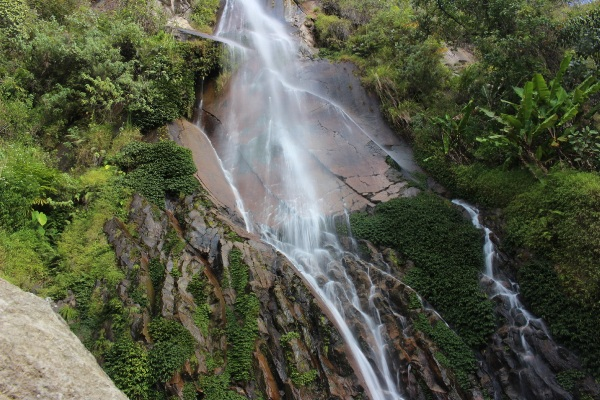

Air Terjun Siboruon

Air terjun siboruon memiliki pemandangan yang indah, mungkin kamu sekalian harus wajib untuk mencoba mengeksplor air terjun siboruon ini. Air terjun yang dikelilingi oleh pepohonan yang rindang, membuat udara disini pun begitu sejuk. Lokasi air terjun yang satu ini berada di dalam hutan. Sehingga selain menikmati akan nikmatnya air terjun, kamu juga bisa bersahabat dengan alam. Dengan gemuruhnya air terjun, serta air yang begitu jernih, membuat kamu sekalian gak sabar untuk langsung mandi dan merasakan dinginnya air terjun tersebut. Tempat yang sunyi, alam yang hijau, gemuruh air terjun, suara fauna hutan, akan membuat liburan kamu semakin rileks, dengan pesona alam dan suara alam yang ikut menambah suasana liburan kamu semakin tenang. Jika ingin berkunjung anda dapat datang pada pagi Jam 06.00-17.00 dan objek wisata ini Gratis atau tidak memiliki tiket masuk, Objek wisata ini memang masih jarang dikenal oleh para wisatawan. Karena lokasinya itu terletak di pemukiman warga, dengan akses jalan kurang bagus. Lokasi air terjun in terletak di Desa Siboruon, Kabupaten Tobasa, Sumatera Utara.